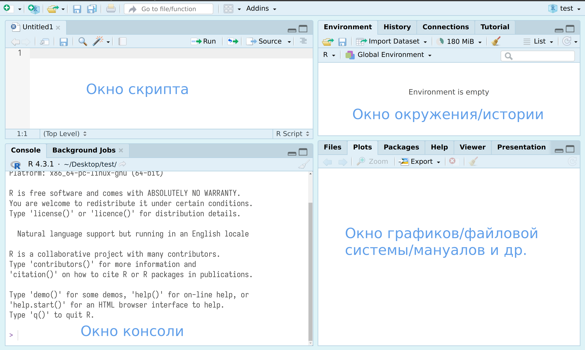

R version 4.4.1 (2024-06-14)1 Введение в R
1.1 Установка R и RStudio
В данном курсе используется исключительно R (R Core Team 2023), так что для занятий понадобятся:
- R
- на Windows
- на Mac
- на Linux, также можно установить из командной строки:
sudo apt-get install r-base- RStudio — IDE для R (можно скачать здесь)
- и некоторые пакеты на R
Часто можно увидеть или услышать, что R — язык программирования для “статистической обработки данных”. Изначально это, конечно, было правдой, но уже давно R — это полноценный язык программирования, который при помощи своих пакетов позволяет решать огромный спектр задач. В данной книге используется следующая версия R:
Некоторые люди не любят устанавливать лишние программы себе на компьютер, несколько вариантов есть и для них:
- RStudio cloud — полная функциональность RStudio с некоторыми ограничениями;
- webR REPL — ограниченная версия компилятора R, которая работает в вашем браузере и не требует никаких установок на компьютер
- Jupyter ноутбуки;
- Google Colab (нужно в настройках переключить ядро);
- VS Code — другое IDE, которое также позволяет работать с R;
- в принципе, в IDE нет нужды, можно работать из терминала, после установки нужно всего лишь набрать
R.
1.2 Знакомство с RStudio
RStudio — основной IDE для R. После установки R и RStudio можно открыть RStudio и перед вами предстанет что-то похожее на изображение ниже:
 После нажатия на двойное окошко, чуть левее надписи Environment, откроется окно скрипта.
После нажатия на двойное окошко, чуть левее надписи Environment, откроется окно скрипта.

Все следующие команды можно:
- вводить в окне консоли, и тогда для исполнения следует нажимать клавишу
Enter. - вводить в окне скрипта, и тогда для исполнения следует нажимать клавиши
Ctrl/Cmd + Enterили на команду Run на панели окна скрипта. Все, что введено в окне скрипта, можно редактировать как в любом текстовом редакторе, в том числе сохранятьCtrl/Cmd + S.
1.3 R как калькулятор
Давайте начнем с самого простого и попробуем использовать R как простой калькулятор. +, -, *, /, ^ (степень), () и т. д.
40+2[1] 423-2[1] 15*6[1] 3099/9[1] 112+4*2[1] 10(2+4)*2[1] 122^3[1] 8Обратите внимание на то, что разделителем целой и дробной частей является точка, кроме того, если целая часть состоит исключительно из 0, то ее можно опустить.
50.3 + .7[1] 511.4 Типы объектов в R
В R достаточно много разных типов данных, особенно доступных в разных пакетах, но нас будут волновать:
- числа
5[1] 523.1[1] 23.132.000032[1] 32.00003pi[1] 3.141593- строки
"мама"[1] "мама""мама мыла раму"[1] "мама мыла раму""О все видавшем до края мира,
О познавшем моря, перешедшем все горы..."[1] "О все видавшем до края мира,\nО познавшем моря, перешедшем все горы..."\n в выдаче обозначает перенос строки.
- логические операторы
TRUE[1] TRUEFALSE[1] FALSE- пропущенные значения
NA(на самом деле этот объект может быть и строкой, и числом)
NA[1] NAВсе что написано после знака # не будет исполнятся компилятором, так что таким образом принято оставлять комментарии:
# посчитаем сумму двух чисел
2+2[1] 4# посчитаем сумму других двух чисел
3+3[1] 61.5 Создание переменных
Для создания переменных следует задать имя переменной и использовать знак присваивания <- (Alt + -).
my_var <- 55 + 412Обратите внимание, что результат суммы не выводится. Он сохраняется в переменной и не будет показано, пока мы не вызовем переменную. Кроме того будут работать и другие способы присвоения, хотя эти способы и не рекомендованы в R:
my_var = 55+12
5512+412 -> my_varДля того, чтобы вызвать нужную переменную, достаточно использовать ее имя:
my_var[1] 5924my_var + 33[1] 5957Если хочется поменять значение переменной, то нужно снова использовать присваивание:
my_var <- my_var + 42
my_var[1] 5966Специфицировать при присваивании тип переменной никак не нужно:
my_var2 <- "Эфывфы вфыв"
my_var3 <- TRUE
my_var4 <- 1212.1212124В R есть ограничения на названия переменных (см. подробнее в справке ?make.names):
- имя может содержать буквы, числа, точку (
.) и нижнее подчеркивание (_); - имя должно начинаться на букву;
- имя не может совпадать с одним из зарезервированных имен:
if,else,repeat,while,function,for,in,next,break,TRUE,FALSE,NULL,Inf,NaN,NA,NA_integer_,NA_real_,NA_complex_,NA_character_(см. подробнее в справке?Reserved); - мы рекомендуем использовать только латинские буквы в названии (хотя любые ASCII символы подойдут);
- мы рекомендуем не называть переменные именами других функций в R, например,
filter,sourceи т. п. - в разных пакетах R Вы увидите разные стратегии называния функций и переменных, но самая распространенная — с использованием нижнего подчеркивания:
- i_use_snake_case;
- otherPeopleUseCamelCase;
- some.people.use.periods;
- главное: не перемешивать разные стили.
1.6 Векторы
Векторы в R — это один из базовых элементов, который позволяет создавать объекты, состоящие из нескольких единиц. Самый простой вектор, который отображает последовательность чисел, можно создать следующим образом:
1:10 [1] 1 2 3 4 5 6 7 8 9 1010:1 [1] 10 9 8 7 6 5 4 3 2 120:-9 [1] 20 19 18 17 16 15 14 13 12 11 10 9 8 7 6 5 4 3 2 1 0 -1 -2 -3 -4
[26] -5 -6 -7 -8 -9При помощи двоеточия можно создавать последовательности чисел с шагом один. К получившимся объектам можно применять арифметические операции: они будут применяться к каждому элементу вектора:
my_var <- 13:3
my_var*2 [1] 26 24 22 20 18 16 14 12 10 8 6my_var^3 [1] 2197 1728 1331 1000 729 512 343 216 125 64 27Если же нужно создать вектор, которой последовательностью не является, следует использовать функцию c() (от слова combine):
fibonacci_sequence <- c(0, 1, 1, 2, 3, 5, 8, 13, 21, 34, 55, 89, 144)
cyrillic_syllables <- c("сяк", "учк", "щип", "арг", "фыщ")Основное правило векторов заключается в том, что элементы вектора должны быть одного типа, иначе R будет сам приводить все элементы к единому формату (по-английски это называют coercion):
c(5, 9, 11, TRUE) # TRUE превратится в 1[1] 5 9 11 1c("в", "золотой", "клубочек", "спрятался", 1, "дубочек") # 1 превратится в строку "1"[1] "в" "золотой" "клубочек" "спрятался" "1" "дубочек" Кроме того в R есть встроенные векторы:
letters [1] "a" "b" "c" "d" "e" "f" "g" "h" "i" "j" "k" "l" "m" "n" "o" "p" "q" "r" "s"
[20] "t" "u" "v" "w" "x" "y" "z"LETTERS [1] "A" "B" "C" "D" "E" "F" "G" "H" "I" "J" "K" "L" "M" "N" "O" "P" "Q" "R" "S"
[20] "T" "U" "V" "W" "X" "Y" "Z"month.name [1] "January" "February" "March" "April" "May" "June"
[7] "July" "August" "September" "October" "November" "December" month.abb [1] "Jan" "Feb" "Mar" "Apr" "May" "Jun" "Jul" "Aug" "Sep" "Oct" "Nov" "Dec"1.7 Индексация векторов
Чтобы вызвать какой-то элемент вектора, нужно написать в квадратных скобках номер требуемого элемента:
letters[13][1] "m"Индексы тоже могут быть вектором. Один и тот же элемент можно вызвать несколько раз:
letters[c(13, 1, 15, 13)][1] "m" "a" "o" "m"Кроме того, в качестве индекса можно давать какую-то инструкцию. Например, так мы можем вывести все элементы вектора v, которые нацело делятся на три:
v <- 100:1
v[v %% 3 == 0] [1] 99 96 93 90 87 84 81 78 75 72 69 66 63 60 57 54 51 48 45 42 39 36 33 30 27
[26] 24 21 18 15 12 9 6 3Эта конструкция достаточно сложная, так что давайте разберем ее поэтапно. Оператор %% возвращает остаток от деления:
v %% 3 [1] 1 0 2 1 0 2 1 0 2 1 0 2 1 0 2 1 0 2 1 0 2 1 0 2 1 0 2 1 0 2 1 0 2 1 0 2 1
[38] 0 2 1 0 2 1 0 2 1 0 2 1 0 2 1 0 2 1 0 2 1 0 2 1 0 2 1 0 2 1 0 2 1 0 2 1 0
[75] 2 1 0 2 1 0 2 1 0 2 1 0 2 1 0 2 1 0 2 1 0 2 1 0 2 1Оператор == сравнивает каждый элемент вектора с 0 (см. противоположный оператор — !=) и возвращает логический вектор:
v %% 3 == 0 [1] FALSE TRUE FALSE FALSE TRUE FALSE FALSE TRUE FALSE FALSE TRUE FALSE
[13] FALSE TRUE FALSE FALSE TRUE FALSE FALSE TRUE FALSE FALSE TRUE FALSE
[25] FALSE TRUE FALSE FALSE TRUE FALSE FALSE TRUE FALSE FALSE TRUE FALSE
[37] FALSE TRUE FALSE FALSE TRUE FALSE FALSE TRUE FALSE FALSE TRUE FALSE
[49] FALSE TRUE FALSE FALSE TRUE FALSE FALSE TRUE FALSE FALSE TRUE FALSE
[61] FALSE TRUE FALSE FALSE TRUE FALSE FALSE TRUE FALSE FALSE TRUE FALSE
[73] FALSE TRUE FALSE FALSE TRUE FALSE FALSE TRUE FALSE FALSE TRUE FALSE
[85] FALSE TRUE FALSE FALSE TRUE FALSE FALSE TRUE FALSE FALSE TRUE FALSE
[97] FALSE TRUE FALSE FALSEПосле применения такой операции, полученный логический вектор (TRUE и FALSE) используется для индексации исходного вектора. В результате возвращаются только те элементы, которым соответствует значение TRUE.
v[v %% 3 == 0] [1] 99 96 93 90 87 84 81 78 75 72 69 66 63 60 57 54 51 48 45 42 39 36 33 30 27
[26] 24 21 18 15 12 9 6 3Возможно, внимательный пользователь уже заметил, что индексация в R идет с единицы. При вызове нулевого индекса будет результат нулевой длинны, а если в индексах есть еще другие элементы, нулевой индекс – будет проигнорирован.
letters[0]character(0)letters[c(2, 0, 4)][1] "b" "d"Индексирование с минусом выдаст все значения вектора за исключением выбранных:
letters[-3] # вектор без буквы c [1] "a" "b" "d" "e" "f" "g" "h" "i" "j" "k" "l" "m" "n" "o" "p" "q" "r" "s" "t"
[20] "u" "v" "w" "x" "y" "z"letters[-c(1, 4, 9)] # вектор без букв a, d и i [1] "b" "c" "e" "f" "g" "h" "j" "k" "l" "m" "n" "o" "p" "q" "r" "s" "t" "u" "v"
[20] "w" "x" "y" "z"1.8 Функции
Основные возможности R скрыты в множестве функций, которые разработчики написали и поместили в пакеты. Функции в R имеют имя (оно ставится до круглых скобок) и аргументы (они перечисляются в круглых скобках по схеме имя аргумента – знак равно – значение). Рассмотрим на примере функции seq():
seq(from = 1, to = 100, by = 13)[1] 1 14 27 40 53 66 79 92Данная функция имеет имя — seq и три аргумента: from, to и by. Эта функция порождает вектор чисел арифметической последовательности. Важно отметить, что знак равно в данном случае не является операцией присваивания. Имена аргументов у каждой функции содержатся в определенном строго заданном порядке. Имена аргументов можно опускать:
seq(1, 100, 13)[1] 1 14 27 40 53 66 79 92Кроме того, пользователь при желании может подавать аргументы в произвольном порядке (и даже не дописывать названия аргументов), но это возможно только в том случае, если названия аргументов опознаваемо:
seq(from = 1, to = 100, by = 13)[1] 1 14 27 40 53 66 79 92seq(from = 1, by = 13, to = 100)[1] 1 14 27 40 53 66 79 92seq(to = 100, from = 1, by = 13)[1] 1 14 27 40 53 66 79 92seq(by = 13, to = 100, from = 1)[1] 1 14 27 40 53 66 79 92seq(to = 100, by = 13, from = 1)[1] 1 14 27 40 53 66 79 92seq(by = 13, to = 100, from = 1)[1] 1 14 27 40 53 66 79 92seq(f = 1, t = 100, b = 13)[1] 1 14 27 40 53 66 79 92Каждый аргумент функции предполагает определенный тип объектов, который подается на вход. Многие функции в R векторизованы, т. е. применимы к векторам. Рассмотрим на примере функции для извлечения корня sqrt():
sqrt(4) # применение к вектору длины 1[1] 2sqrt(1:100) # применение к вектору длины 100 [1] 1.000000 1.414214 1.732051 2.000000 2.236068 2.449490 2.645751
[8] 2.828427 3.000000 3.162278 3.316625 3.464102 3.605551 3.741657
[15] 3.872983 4.000000 4.123106 4.242641 4.358899 4.472136 4.582576
[22] 4.690416 4.795832 4.898979 5.000000 5.099020 5.196152 5.291503
[29] 5.385165 5.477226 5.567764 5.656854 5.744563 5.830952 5.916080
[36] 6.000000 6.082763 6.164414 6.244998 6.324555 6.403124 6.480741
[43] 6.557439 6.633250 6.708204 6.782330 6.855655 6.928203 7.000000
[50] 7.071068 7.141428 7.211103 7.280110 7.348469 7.416198 7.483315
[57] 7.549834 7.615773 7.681146 7.745967 7.810250 7.874008 7.937254
[64] 8.000000 8.062258 8.124038 8.185353 8.246211 8.306624 8.366600
[71] 8.426150 8.485281 8.544004 8.602325 8.660254 8.717798 8.774964
[78] 8.831761 8.888194 8.944272 9.000000 9.055385 9.110434 9.165151
[85] 9.219544 9.273618 9.327379 9.380832 9.433981 9.486833 9.539392
[92] 9.591663 9.643651 9.695360 9.746794 9.797959 9.848858 9.899495
[99] 9.949874 10.000000Давайте посмотрим на ошибку, которую мы получим, если подадим на вход тип данных, который функцией не предполагается:
sqrt("asdasd")Error in sqrt("asdasd"): non-numeric argument to mathematical functionВажно отметить, что в реальных данных могут встретиться пропущенные значения (NA), что вызывает NA при применении некоторых функций, так что в них можно встретить аргумент na.rm, например:
mean(c(1:50))[1] 25.5mean(c(1:50, NA))[1] NAmean(c(1:50, NA), na.rm = TRUE)[1] 25.5Очень важно, что все функции в R задокументированы, так что список аргументов, их порядок, их значения по умолчанию, примеры использования — все это можно найти в справке, которую можно вызвать, набрав в консоли вопросительный знак и имя функции, например, ?seq, ?mean и т. п.
1.9 Датафреймы и их индексация
Датафрейм — это один из основных объектов в R, который обычно используется для импорта и экспорта табличных данные. Датафрейм — это собрание векторов одинаковой длинны. Давайте создадим датафрейм:
df <- data.frame(name = c("Анна", "Вера", "Михаил"),
age = c(23, 33, 11),
color = c("голубой", "зеленый", "желтый"))
dfХоть мы и записывали разные векторы датафрейма в строчку, стандартное представление датафрейма перевернутое: каждый вектор – это столбец. Каждый отдельный вектор датафрейма можно вызвать по имени (и индексировать как обычный вектор):
df$color[1] "голубой" "зеленый" "желтый" df$name[2:3][1] "Вера" "Михаил"Кроме того, к элементам датафрейма можно обращаться при помощи индекса в квадратных скобках, сначала идут строки, потом столбцы.
df[3,3][1] "желтый"Если какой-то элемент не нужен, то его оставляют пустым, но запятую ставить обязательно:
df[3,]Еще варианты обращения к элементам датафрейма
df[3,c(1, 3)]df[c(1, 3), c(1, 3)]Кроме того, можно вызывать необходимые столбцы по имени прямо внутри квадратных скобок:
df[, c("age", "name")]df <- df[, c("age", "name", "color")]В R есть достаточно много встроенных датасетов, вот самые популярные:
mtcarsiris1.10 Работа с пакетами
Все богатство R заключается в его огромной инфраструктуре пакетов, которые может разрабатывать кто угодно: от больших компаний до частных исследователей. Чтобы их установить, нужно использовать команду install.packages(). Начнем с установки центрального для курса пакета: tidyverse:
install.packages("tidyverse")Следует помнить, что установка пакета не влечет за собой работу всех функций пакета. Пакет еще нужно включить командой library().

Проверим, что все установилось, запустим пакет.
library(tidyverse)── Attaching core tidyverse packages ──────────────────────── tidyverse 2.0.0 ──
✔ dplyr 1.1.4 ✔ readr 2.1.5
✔ forcats 1.0.0 ✔ stringr 1.5.0
✔ ggplot2 3.5.1 ✔ tibble 3.2.1
✔ lubridate 1.9.2 ✔ tidyr 1.3.1
✔ purrr 1.0.1
── Conflicts ────────────────────────────────────────── tidyverse_conflicts() ──
✖ dplyr::filter() masks stats::filter()
✖ dplyr::lag() masks stats::lag()
ℹ Use the conflicted package (<http://conflicted.r-lib.org/>) to force all conflicts to become errors1.11 Чтение и запись табличных данных
Табличные данные можно хранить в разных форматах, самые распространенные:
- Формат
.csv(comma seprated value) с одним из разделителей: запятая, табуляция и т. д. - Таблицы
.xlsx.
Чтение происходит из рабочей директории, которую можно узнать командой getwd() и назначить командой setwd(), например:
setwd("path/to/my/folder")После того, как изменилась рабочая директория (в RStudio рабочая директория пишется в шапке раздела консоль), становится возможным считывать файлы.
df <- read_csv("orange_circumference.csv")В принципе рабочую директорию можно и не менять а в качестве аргумента подавать полный путь:
df <- read_csv("path/to/my/folder/orange_circumference.csv")Кроме того, важно отметить, что R позволяет считывать данные и из интернета, например, тот же самый датасет находится по следующей ссылке: https://raw.githubusercontent.com/agricolamz/daR4hs/main/data/w1_orange_circumference.csv
df <- read_csv("https://raw.githubusercontent.com/agricolamz/daR4hs/main/data/w1_orange_circumference.csv")Rows: 35 Columns: 3
── Column specification ────────────────────────────────────────────────────────
Delimiter: ","
dbl (3): Tree, age, circumference
ℹ Use `spec()` to retrieve the full column specification for this data.
ℹ Specify the column types or set `show_col_types = FALSE` to quiet this message.dfОбычно при чтении функцией read_csv() также высвечивается информация о типах столбцов. Это сообщение можно выключить при помощи аргумента show_col_types:
df <- read_csv("https://raw.githubusercontent.com/agricolamz/daR4hs/main/data/w1_orange_circumference.csv", show_col_types = FALSE)Чтение .xlsx файлов устроено аналогичным образом с тем лишь отличием, что эта функция не позволяет читать файлы из интернета. Если вам нужен файл на пробу, то вот ссылка на датасет, который мы обсуждали выше, в формате .xlsx.
library(readxl)
df <- read_xlsx("orange_circumference.xlsx")Сохранение файлов устроено похожим образом, просто выберите одну из функций
write_csv()— разделитель запятаяwrite_tsv()— разделитель табуляцияwrite_delim()— произвольный разделитель, который задается в аргументеdelim
write_csv(df, "orange_circumference_g100.csv")
write_tsv(df, "orange_circumference_g100.tsv")
write_delim(df, "orange_circumference_g100.zsv", delim = "0")1.12 Как справляться с проблемами
Код не работает очень часто, очень важно внимательно читать ошибки. Если чтение не помогло, то можно скопировать ошибку в поисковик, скорее всего кто-нибудь на Stack Overflow (место, где принято задавать вопрос) или Posit Community (место для вопросов на R и Python) уже сталкивался с вашей проблемой. Кроме того, никто не может написать пакет на R, который пройдет в основной репозиторий CRAN, не задокументировав все функции пакета. В связи с этим имеет смысл искать ответы во вкладке Help в Rstudio, а также в консоли, используя знак вопроса (или два, если ничего не находится) и имя функции, например, ?write_csv или ??read_xlsx. wd